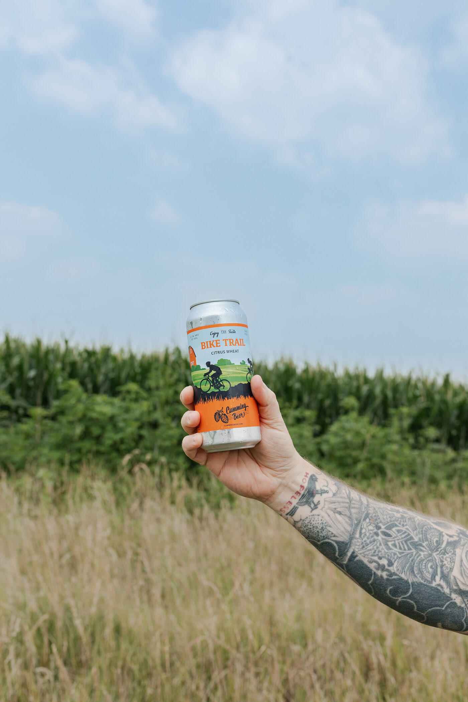
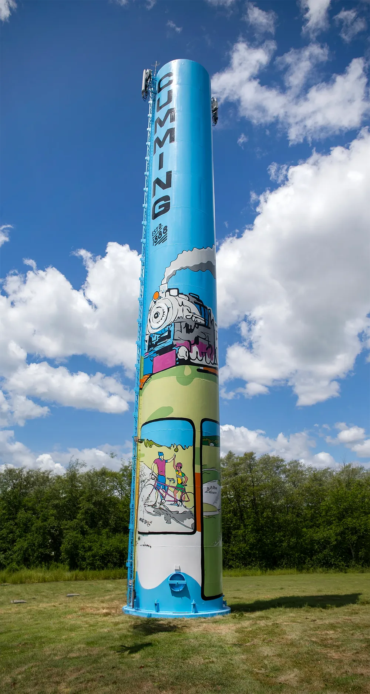
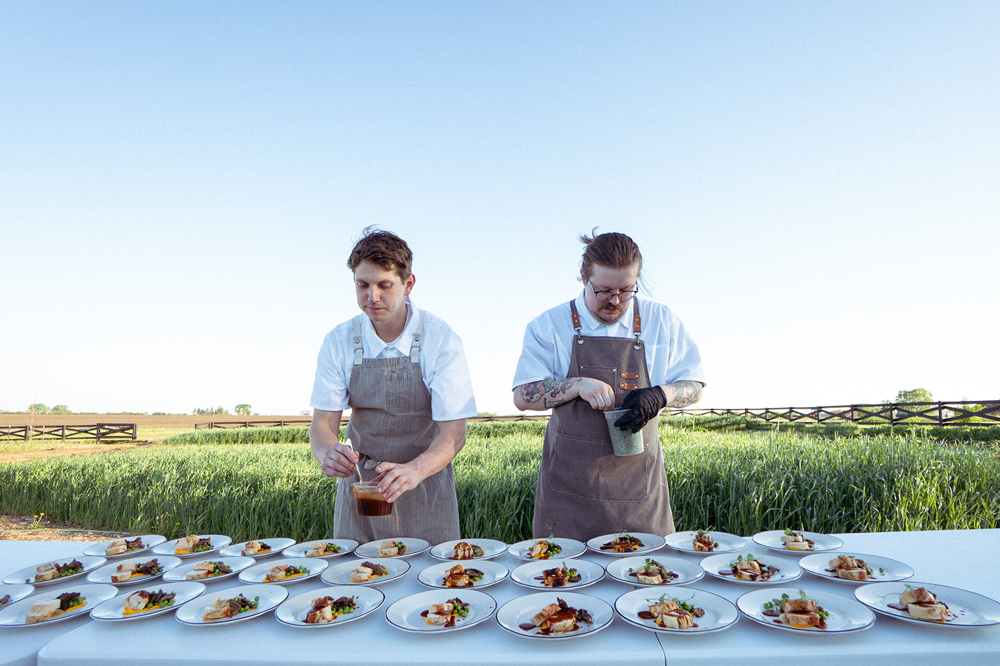
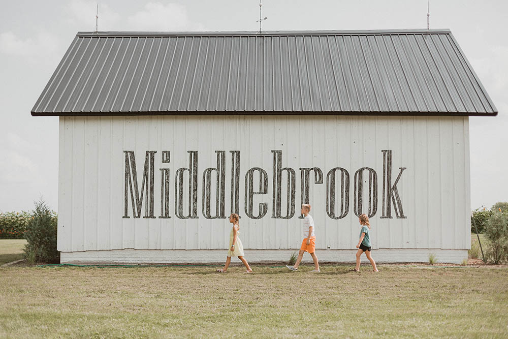
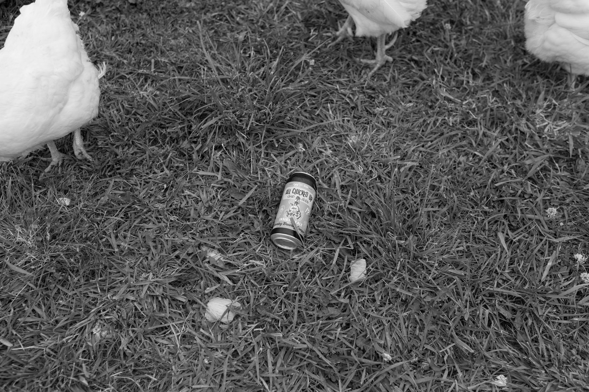
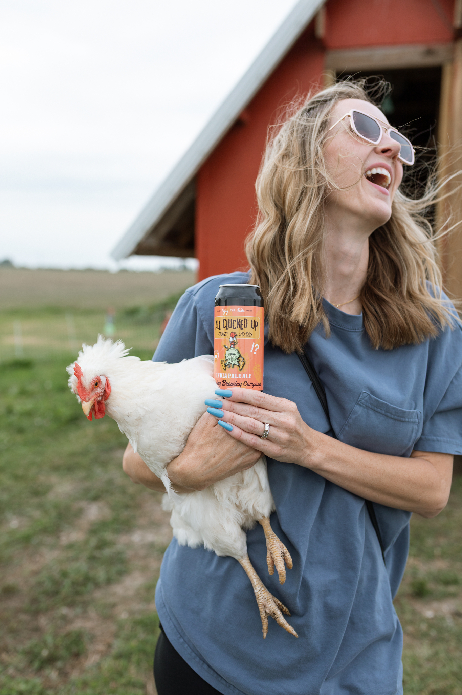
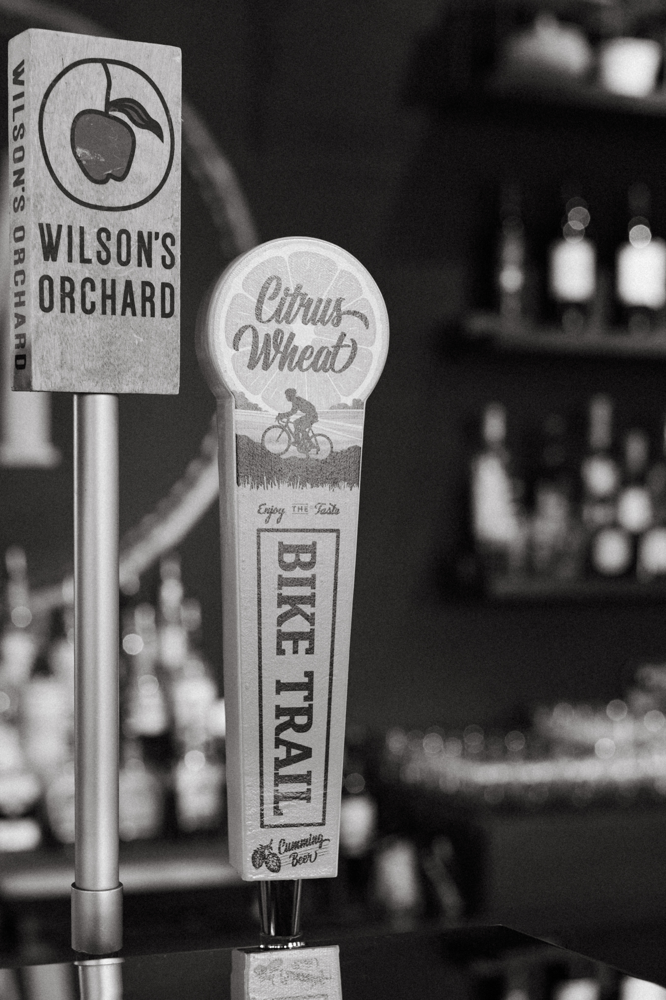
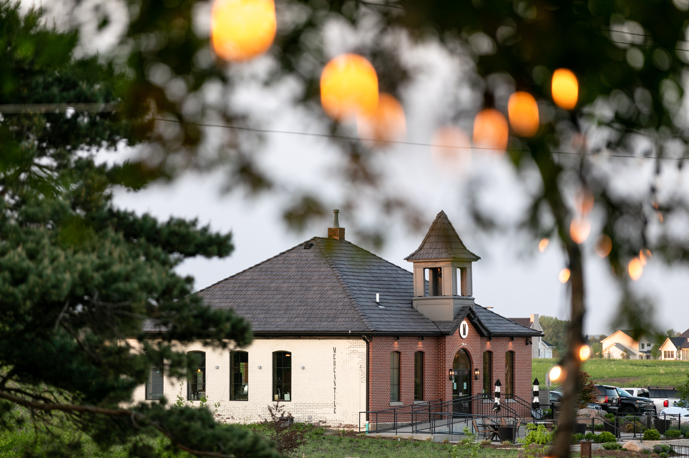
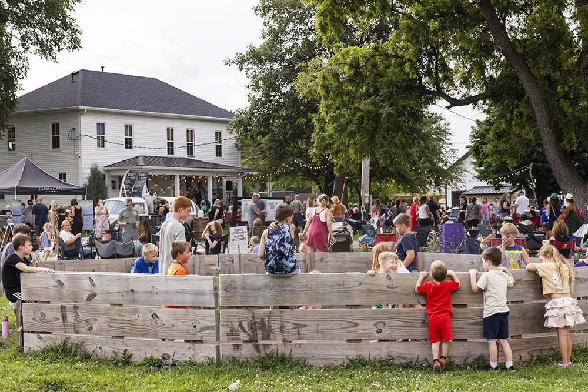

Cumming Brewing Co.
You need to be of legal drinking age to visit this site.
Cumming Brewing Co. · Cumming, Iowa
Enjoy the taste.
Four beers, one very memorable town. Brewed for the people who already know exactly where Cumming, Iowa is, and the ones who are about to find out.

Bike Trail, out on the trail
The Lineup
Tap a can for the full pour: style, ABV, and what it's actually like to drink.
Cumming, Iowa · Est. at Middlebrook
Cumming Beer is brewed for this town, not just named after it. Every can carries a piece of it: the water tower, the old schoolhouse, the Great Western Trail, the farms and fields that have always been here.
Cumming isn't stuck in the past, though. It's growing into what comes next, and agriculture and community are still at the center of it. There's Middlebrook, Iowa's first agrihood: working farms, walking trails, front porches, places to gather. Friday nights at the Farm. Coffee and cocktails at the Mercantile. Spirits at the distillery. 70+ acres of orchard and polyculture farmland out at Wilson's, with cider and wood-fired pizza to go with it.
Small-town Iowa, with a little momentum behind it. We're proud to make its beer.
Where To Find It




All Clucked Up, at the coop
Bike Trail, on tapYes, It's Really Called That
You're not the first person to slow down for the road sign. Turns out there's more than one of us out there. We're the small-town, agrihood-and-farms version, not the sprawling Atlanta-suburb one.
Where To Find It
No storefront of our own yet. You'll find us out where the town already gathers.

Year-round
Our home port in Cumming. On tap and in cans. Cumming's original one-room schoolhouse, retrofitted as a wine and cocktail bar buzzing with music, trivia, good drinks, and community all week long.

Seasonal · May – Sept
Every Friday through the warm months. Bring a chair or blanket, grab a cold beer from the Beer Tent, and settle in front of the farmhouse for live music. Or wander the farm, take in the fields, and make an evening of it.
Follow Along
New releases straight to your inbox.
Bars, restaurants, and events: reach out about carrying Cumming Beer.
Contact: Info@CummingBeer.com